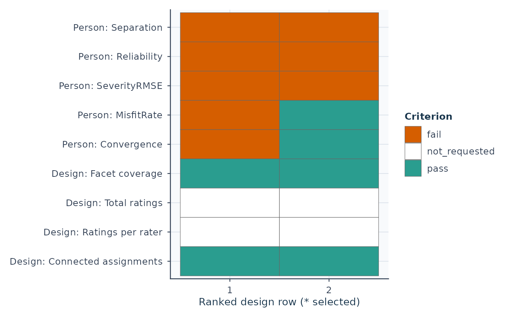

Review assessment plans against declared planning criteria
Source:R/api-simulation.R, R/api-design-recommendation.R
recommend_mfrm_design.RdReview assessment plans against declared planning criteria
Usage
recommend_mfrm_design(
x,
facets = c("Rater", "Criterion"),
min_separation = 2,
min_reliability = 0.8,
max_severity_rmse = 0.5,
max_misfit_rate = 0.1,
min_convergence_rate = 1,
prefer = c("n_person", "raters_per_person", "n_rater", "n_criterion"),
max_ratings = NULL,
max_ratings_per_rater = NULL,
require_connected = TRUE,
costs = NULL,
limits = NULL,
targets = NULL
)
# S3 method for class 'mfrm_design_recommendation'
summary(object, ...)
# S3 method for class 'summary.mfrm_design_recommendation'
print(x, ...)
# S3 method for class 'mfrm_design_recommendation'
print(x, ...)
# S3 method for class 'mfrm_design_recommendation'
plot(x, draw = TRUE, ...)Arguments
- x
-
For
recommend_mfrm_design(): Output fromevaluate_mfrm_design(),summary.mfrm_design_evaluation(), ormfrm_multivariate_d_compare(). The last input reviews observed-score D-study plans with their saved paired uncertainty; it does not use the simulation-screening defaults.For
plot(): A simulation-based result fromrecommend_mfrm_design(). - facets
Non-empty vector of facets that must satisfy the planning thresholds. By default, use the stored non-person facet names; for older objects without these names, use the non-person facets in the summary.
- min_separation
Minimum acceptable mean separation.
- min_reliability
Minimum acceptable mean reliability.
- max_severity_rmse
Maximum acceptable severity recovery RMSE.
- max_misfit_rate
Maximum acceptable mean misfit rate.
- min_convergence_rate
Minimum acceptable convergence rate.
- prefer
Ranking priority among design variables. Earlier entries are optimized first when multiple designs pass. Custom public aliases from
sim_specare also accepted, as are the role keywordsperson,rater,criterion, andassignment.- max_ratings
Optional upper bound on total rating rows in each evaluated replication. Supply a non-negative whole number, or
NULL(default) to impose no limit.- max_ratings_per_rater
Optional upper bound on rating rows assigned to any one rater-like facet level in each evaluated replication. Supply a non-negative whole number, or
NULL(default) to impose no limit.- require_connected
Logical; require both generated Person-facet assignment graphs to be connected in every recorded replication (default
TRUE). This covers both non-person facets regardless of which performance metrics are selected throughfacets. SetFALSEonly to explicitly omit this structural screen; the recorded status is retained.- costs
For a saved D-study comparison only: an optional data frame with
Scenario(each row number ofx$design_gridexactly once, including the reference) and numeric nonnegative resource columns, such asTotalRatingsorRaterHours. Rows may be reordered.NAmeans unknown, never zero. Name each column to identify its unit; the function does not infer costs or a future number of Persons from the source sample size.- limits
For a D-study comparison: a named numeric vector of finite nonnegative upper bounds for columns in
costs. Unspecified columns are descriptive only.NULLrequests no feasibility screen.- targets
For a D-study comparison: a named numeric vector of point targets, with minimum
G/Phiin[0,1]and maximumRelativeSEM/AbsoluteSEMin the selected score units.NULLrequests no target screen. There is no default target or interval-based attainment claim.- object
A simulation-based result from
recommend_mfrm_design().- ...
Unused; extra arguments are rejected.
- draw
Logical; draw the criterion-status matrix. Use
FALSEto retrieve every criterion and source table without drawing.
Value
For simulation inputs, a list of class mfrm_design_recommendation with:
facet_table: facet-level threshold checks, including design-variable alias columns when applicabledesign_table: design-level aggregated checks, including design-variable alias columns when applicable,MaxRatings,MaxRatingsPerRater, and workload checksRatingsPassandRaterWorkloadPass. ItsPassrequires the facet-level checks, active workload limits, andConnectivityPass. Component maxima,DisconnectedReps,ConnectivityStatus, and the separateLinkReviewStatus/LinkReviewReasonexplain structural checks.recommended: the first passing design after rankingthresholds: thresholds used in the recommendationdesign_variable_aliases: accepted public aliases for design variablesdesign_descriptor: role-based design-variable metadataplanning_scope: explicit record of the current planning contractplanning_constraints: explicit record of mutable/locked design variablesplanning_schema: structured planning metadatacaveats: fixed-effects and connectivity interpretations and suggested post-fit reviews
For a saved D-study comparison, the same mfrm_multivariate_d_comparison
object with a planning list as described above. Numeric comparisons and
their joint covariance are unchanged; summary(result) still returns the
original comparison table. No unique recommended row is selected.
For summary(): summary() returns a summary.mfrm_design_recommendation list
containing target, thresholds, checks, design_table, facet_table,
recommended, and notes. Print methods return their input invisibly.
For plot(): An invisible ggplot object whose underlying payload
(accessible via plot_data()) retains table (long criterion outcomes),
designs, targets, thresholds and interpretation notes.
Details
For simulation inputs, this helper screens designs under user-chosen planning criteria.
The default targets non-Person facet calibration: high separation reliability
means that facet-level differences can be distinguished, not that raters
agree. Use facets = "Person" to target Person differentiation instead.
Neither use establishes classification accuracy or a universal sample size.
Inspect summary(result)$target and $thresholds before interpreting the
recommendation. Defaults are planning choices, not validated standards.
summary.mfrm_design_recommendation() explains the criterion outcomes;
plot.mfrm_design_recommendation() and mfrm_report() preserve them without
repeating the simulation. No plan-selection confidence interval is computed.
A design is marked as recommended when all requested facets satisfy all
selected thresholds simultaneously.
Each design must have results for every requested facet. Missing facets
are reported in FacetsMissing and prevent that design from passing;
FacetsRequired always counts the requested facets, not the available rows.
Designs with none of the requested facets have no facet-check rows and
cannot be recommended. A requested facet absent from the entire summary
produces an error.
If multiple designs pass, the helper returns the smallest one according to
prefer (by default: fewer persons first, then fewer ratings per person,
then fewer raters, then fewer criteria).
The convergence threshold uses all recorded replications, including
failures that returned no facet metrics, as summarized by
summary.mfrm_design_evaluation().
Threshold checks use unrounded metrics. Summaries saved by earlier
versions may contain only rounded values; rebuild them with
summary(original_evaluation) before requesting a recommendation.
The original evaluation can be reused without generating or fitting new data.
Summaries also need the current recovery-coordinate review. Rebuilding an
old PCM/GPCM summary can leave its recovery fields unavailable, preventing a
recommendation; a new evaluation is needed for corrected severity recovery.
An unavailable group minimum/maximum is NA, not infinite apparent success.
The connectivity screen uses generated assignments, including failed fits
and diagnostic runs. ConnectivityStatus is "disconnected" if any
recorded graph is disconnected, "connected" if both graphs are connected
in every replication, and "not_assessed" otherwise. With the default
require_connected = TRUE, only "connected" passes. Older saved objects
without component counts cannot pass this screen; re-summarizing alone
cannot recover the missing assignment evidence.
This is a conservative screen for comparisons supported by shared-person
assignments, not a test of full model identification or adequate precision.
MML population assumptions can supply information beyond these connections;
disabling the screen does not validate that assumption-based comparison.
Connections may be indirect, so a rater pair without common persons is
not by itself evidence of a disconnected design. LinkReviewStatus and
LinkReviewReason carry the separate sparse-design overlap review:
"review" flags a missing overlap count, a pair without common persons,
or a pair below its recorded target; "ok" means those recorded checks
pass, and "not_assessed"
means no sparse overlap target was assessed. They do not change Pass;
overlap counts alone do not establish precision or a universal minimum.
Workload limits apply to the maxima across all recorded replications,
including failed fits and diagnostic runs. One rating is one generated
person-rater-criterion row, not a bundle of criteria or a weighted count.
For example, two raters each scoring three criteria for ten persons use
60 ratings, with 30 per rater. Counts use the actual assignment, including
linking persons and uneven or incomplete skeletons. A design cannot pass
an active limit when its corresponding count is missing. Older evaluation
objects can be re-summarized for total counts, but per-rater counts require
an evaluation that recorded MaxRatingsPerRater.
These checks describe the evaluated assignments. With randomized
assignments, an observed maximum does not guarantee that future assignments
will respect the same limit. The limits constrain workload, not monetary
cost or scoring time. Ranking among passing designs still follows prefer.
summary() method: Review a simulation-based design recommendation
For summary(): Recommendations screen the saved simulation aggregates under the requested
criteria. The default targets non-Person facet calibration. For Person
differentiation, request facets = "Person" when recommending the design.
Neither target establishes classification accuracy, inter-rater agreement,
a universal minimum sample size or precision outside the simulated population.
checks has one row per design, target facet and criterion, including
unavailable metrics and inactive constraints. DesignRow links these rows
to the complete, ranked design_table. Selected marks the first passing
plan under the stored prefer order; it does not establish an optimum over
unevaluated plans. Pass and selected plans are reused without recalculation.
Threshold sources are recorded for new results; older saved results show
not_recorded. No confidence intervals or selection-adjusted uncertainty
are calculated. Retain the simulation's generating assumptions and replication
evidence with the recommendation.
plot() method: Plot criteria behind a design recommendation
For plot(): Columns are ranked candidates, labelled by DesignRow; an asterisk
marks the selected candidate. Rows combine the facet and criterion.
Grey means unavailable and white means not requested, neither a passing
result. Selection follows the stored ordering, not a new utility function.
For custom ggplot/raincloud graphics, use plot_data(x, "table") or obtain
full design metrics with plot_data(x, "designs", format = "long", value_cols = c("MinReliability", "MaxRatings")). These aggregate metrics
are not replication-level distributions for a raincloud plot.
Observed-score plans with paired uncertainty
Pass a saved mfrm_multivariate_d_compare() result to connect finite
prespecified plans, costs, limits and point targets without refitting or
calculating new intervals. Its two-crossed-random-facet, raw-component and
normal-effects scope is unchanged. All plans, including the reference,
infeasible plans and unavailable values, remain present in original order.
Explicit simulation-only arguments (such as min_reliability or prefer)
are rejected for this route. Separation reliability and observed-score
G/Phi are different targets.
The returned comparison retains its class and original numeric results.
summary(result, planning = TRUE) returns plans, costs, checks,
differences, basis and notes. plans$Feasibility concerns only requested
resource limits; plans$TargetStatus concerns point estimates only.
differences$Direction is improved or worse only when the saved paired
interval excludes zero in the corresponding direction (larger G/Phi or
smaller SEM). It is inconclusive when zero is included, identical_plan
for the same facet counts, and unavailable without a usable interval.
These labels do not establish equivalence or a practically important effect.
ReviewRequired retains non-PSD component/sampling-covariance concerns;
calculable points and bounds are not removed or repaired. Passing point
targets does not establish population target attainment. The function does
not select a winner, optimize costs, combine incompatible objectives, or
adjust for searching among plans. Pointwise intervals cannot support a
post-selection guarantee. Use mfrm_report() with study_context to record
the intended score, sampled universe, resource units and decision criteria.
plot(result) and plot(result, view = "differences") retain planning
tables and cautions through plot_data(). Save the complete object with
saveRDS(); a single CSV loses source, weights and assumptions.
This route concerns observed-score means under a common G-study. It is not a latent-ability or Bayesian future-plan prediction. The posterior scoring API does not yet provide a paired future-plan comparison.
Typical workflow
Review
summary.mfrm_design_evaluation()andplot.mfrm_design_evaluation().Use
recommend_mfrm_design(...)to identify the smallest acceptable design.
See also
evaluate_mfrm_design(), summary.mfrm_design_evaluation, plot.mfrm_design_evaluation,
mfrm_multivariate_d_compare()
recommend_mfrm_design(), plot.mfrm_design_recommendation(),
mfrm_report(), export_summary_appendix()
summary.mfrm_design_recommendation(), as_ggplot(), plot_data()
Examples
# One saved replication illustrates output structure, not precise rates.
# Regeneration recipe: examples/simulation-results.R in the package.
saved <- readRDS(system.file("examples", "simulation-design.rds",
package = "mfrmr", mustWork = TRUE))
# Inspect saved$generation_warnings and the result's run/status tables.
sim_eval <- saved$result
rec <- recommend_mfrm_design(
sim_eval, max_ratings = 48, max_ratings_per_rater = 24
)
rec$recommended
#> # A tibble: 0 × 26
#> # ℹ 26 variables: design_id <chr>, n_person <int>, n_rater <int>,
#> # n_criterion <int>, raters_per_person <int>, FacetsChecked <chr>,
#> # FacetsMissing <chr>, MinSeparation <dbl>, MinReliability <dbl>,
#> # MaxSeverityRMSE <dbl>, MaxMisfitRate <dbl>, MinConvergenceRate <dbl>,
#> # MaxRatings <int>, MaxRatingsPerRater <int>, MaxRaterComponents <int>,
#> # MaxCriterionComponents <int>, DisconnectedReps <int>,
#> # LinkReviewStatus <chr>, LinkReviewReason <chr>, FacetsPassing <int>, …
# Observed-score planning: declared tasks/raters, paired differences and costs
data("mfrmr_example_gtheory_crossed", package = "mfrmr")
g <- mfrm_g_study(mfrmr_example_gtheory_crossed, c("Content", "Organization"))
d <- mfrm_d_study(g, data.frame(Raters = c(2, 3, 4), Tasks = c(6, 4, 3)),
weights = c(Content = .5, Organization = .5))
comparison <- mfrm_multivariate_d_compare(d, assumption = "normal")
# Illustrative operational hours for the same future cohort, supplied by the user
costs <- data.frame(Scenario = 1:3, RaterHours = c(40, 44, 48),
TaskHours = c(12, 8, 6))
review <- recommend_mfrm_design(comparison, costs = costs,
limits = c(RaterHours = 46), targets = c(G = .58, Phi = .39))
summary(review, planning = TRUE)$plans
#> Scenario IsReference RatingsPerPerson G Phi RelativeSEM
#> 1 1 TRUE 12 0.5607879 0.3646152 0.5774748
#> 2 2 FALSE 12 0.5947792 0.3915712 0.5385960
#> 3 3 FALSE 12 0.5993499 0.3910704 0.5335039
#> AbsoluteSEM Feasibility TargetStatus ReviewRequired
#> 1 0.8613827 feasible fail FALSE
#> 2 0.8133822 feasible pass FALSE
#> 3 0.8142378 infeasible pass FALSE
summary(review, planning = TRUE)$differences
#> Reference Scenario Kind Score Metric ReferenceValue Value
#> 1 1 2 Composite Composite G 0.5607879 0.5947792
#> 2 1 2 Composite Composite Phi 0.3646152 0.3915712
#> 3 1 2 Composite Composite RelativeSEM 0.5774748 0.5385960
#> 4 1 2 Composite Composite AbsoluteSEM 0.8613827 0.8133822
#> 5 1 3 Composite Composite G 0.5607879 0.5993499
#> 6 1 3 Composite Composite Phi 0.3646152 0.3910704
#> 7 1 3 Composite Composite RelativeSEM 0.5774748 0.5335039
#> 8 1 3 Composite Composite AbsoluteSEM 0.8613827 0.8142378
#> Difference Status SE Lower Upper Direction
#> 1 0.03399130 Available 0.005947269 0.02233487 0.04564774 improved
#> 2 0.02695599 Available 0.020683397 -0.01358272 0.06749470 inconclusive
#> 3 -0.03887873 Available 0.006955045 -0.05251036 -0.02524709 improved
#> 4 -0.04800055 Available 0.038102461 -0.12268000 0.02667890 inconclusive
#> 5 0.03856203 Available 0.010405112 0.01816839 0.05895568 improved
#> 6 0.02645516 Available 0.037138595 -0.04633515 0.09924547 inconclusive
#> 7 -0.04397091 Available 0.011934932 -0.06736295 -0.02057887 improved
#> 8 -0.04714496 Available 0.066016840 -0.17653559 0.08224567 inconclusive
#> Feasibility TargetStatus ReviewRequired
#> 1 feasible pass FALSE
#> 2 feasible pass FALSE
#> 3 feasible pass FALSE
#> 4 feasible pass FALSE
#> 5 infeasible pass FALSE
#> 6 infeasible pass FALSE
#> 7 infeasible pass FALSE
#> 8 infeasible pass FALSE
# Saved synthetic simulation; one replication illustrates structure only.
saved <- readRDS(system.file("examples", "simulation-design.rds",
package = "mfrmr", mustWork = TRUE))
rec <- recommend_mfrm_design(saved$result, facets = "Person")
summary(rec)
#> Simulation-based design recommendation
#> Facet Target
#> Person Person differentiation
#> Interpretation
#> Distinguishing Persons in the simulated population; not classification accuracy at a cut score.
#>
#> 0 of 2 evaluated designs pass.
#> No evaluated design meets all requested criteria.
#> Use $checks for all criterion outcomes and $thresholds for their source.
#> This screen does not establish agreement, classification accuracy or a universal sample size.
report <- mfrm_report(rec)
report$tables$checks
#> DesignRow Facet Criterion Value Relation
#> 1 1 Person Separation 1.1335399 >=
#> 2 2 Person Separation 1.5524611 >=
#> 3 1 Person Reliability 0.5623465 >=
#> 4 2 Person Reliability 0.7067565 >=
#> 5 1 Person SeverityRMSE 1.2020555 <=
#> 6 2 Person SeverityRMSE 0.6882577 <=
#> 7 1 Person MisfitRate 0.1666667 <=
#> 8 2 Person MisfitRate 0.0000000 <=
#> 9 1 Person Convergence 0.0000000 >=
#> 10 2 Person Convergence 1.0000000 >=
#> 11 1 All requested facets Facet coverage 1.0000000 =
#> 12 2 All requested facets Facet coverage 1.0000000 =
#> 13 1 All requested facets Total ratings 32.0000000 <=
#> 14 2 All requested facets Total ratings 48.0000000 <=
#> 15 1 All requested facets Ratings per rater 16.0000000 <=
#> 16 2 All requested facets Ratings per rater 24.0000000 <=
#> 17 1 All requested facets Connected assignments 1.0000000 =
#> 18 2 All requested facets Connected assignments 1.0000000 =
#> Threshold Status
#> 1 2.0 fail
#> 2 2.0 fail
#> 3 0.8 fail
#> 4 0.8 fail
#> 5 0.5 fail
#> 6 0.5 fail
#> 7 0.1 fail
#> 8 0.1 pass
#> 9 1.0 fail
#> 10 1.0 pass
#> 11 1.0 pass
#> 12 1.0 pass
#> 13 NA not_requested
#> 14 NA not_requested
#> 15 NA not_requested
#> 16 NA not_requested
#> 17 1.0 pass
#> 18 1.0 pass
saved <- readRDS(system.file("examples", "simulation-design.rds",
package = "mfrmr", mustWork = TRUE))
rec <- recommend_mfrm_design(saved$result, facets = "Person")
plot(rec)

head(plot_data(rec, "table"))
#> DesignRow Facet Criterion Value Relation Threshold Status
#> 1 1 Person Separation 1.1335399 >= 2.0 fail
#> 2 2 Person Separation 1.5524611 >= 2.0 fail
#> 3 1 Person Reliability 0.5623465 >= 0.8 fail
#> 4 2 Person Reliability 0.7067565 >= 0.8 fail
#> 5 1 Person SeverityRMSE 1.2020555 <= 0.5 fail
#> 6 2 Person SeverityRMSE 0.6882577 <= 0.5 fail
#> Check
#> 1 Person: Separation
#> 2 Person: Separation
#> 3 Person: Reliability
#> 4 Person: Reliability
#> 5 Person: SeverityRMSE
#> 6 Person: SeverityRMSE